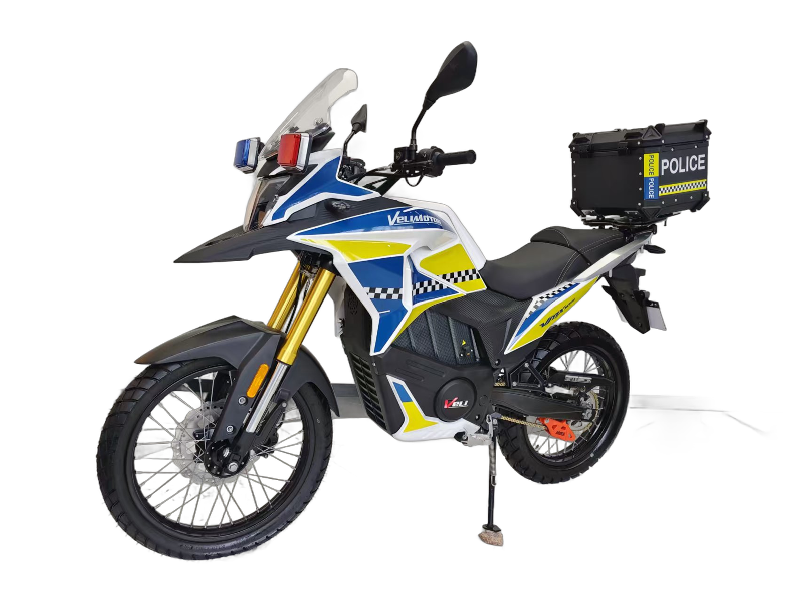
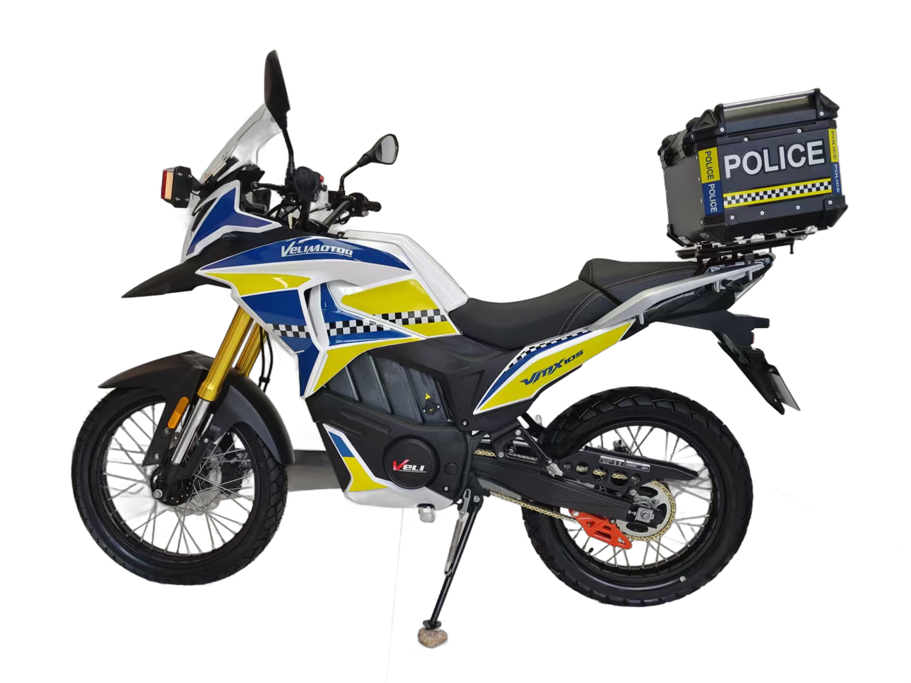
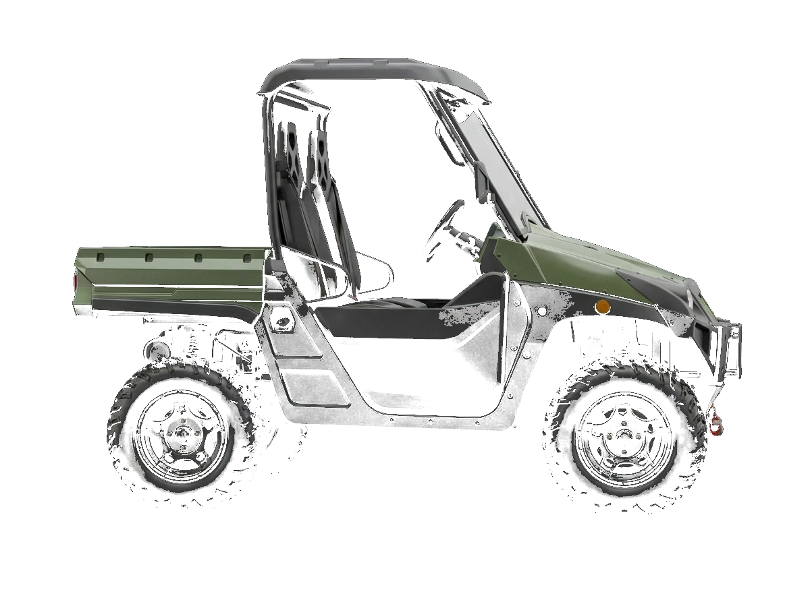

Empresas y administraciones
Donde el ruido, el humo y el mantenimiento son un coste operativo y no una preferencia, una flota eléctrica se amortiza sola.
Dónde funciona
Administración pública
- Policía local y unidades rurales
- Vigilancia de parques, playas y polígonos
- Servicios municipales en casco histórico
- Protección civil y accesos forestales
Sector agrícola
- Fincas y explotaciones extensivas
- Invernaderos y naves, sin emisiones en interior
- Control de riego y perímetros
Turismo y ocio
- Campos de golf y resorts
- Hoteles rurales y rutas guiadas
- Escuelas de conducción off-road
Seguridad privada
- Grandes recintos y campus
- Rondas nocturnas sin generar ruido
- Plantas industriales y logísticas
Policía y seguridad
La VMX 10S se entrega lista para patrulla: rotulación reflectante a medida del cuerpo, luces prioritarias, baúl portaequipos y toma de a bordo para la emisora. Y con marcha atrás para maniobrar donde una moto de patrulla normal obliga a bajarse.

Ronda silenciosa
Una patrulla eléctrica no se anuncia a dos calles. Para rondas nocturnas, recintos y aproximaciones, el silencio es equipamiento operativo.
Casco urbano sin humo
Cero emisiones locales y etiqueta CERO en la versión matriculada: circula donde las restricciones municipales frenan al resto de la flota.
Coste por turno
Recarga a precio de kilovatio y un motor sin aceite, filtros ni bujías. El mantenimiento de una flota deja de ser una partida mensual.

El UTV de trabajo
El VL 5000 es el vehículo de flota de la gama: 120 km de autonomía, 60 km/h y cero emisiones locales, así que entra en naves e invernaderos donde un motor de combustión no puede trabajar.

Cómo trabajamos una flota
Prueba en tus instalaciones
Llevamos una unidad a tu finca, recinto o dependencia municipal y la usáis en condiciones reales durante unos días. Sin compromiso.
Presupuesto cerrado
A partir de cinco unidades trabajamos precio de flota, con formación al personal y plan de mantenimiento incluido.
Licitación pública
Preparamos la documentación técnica que exige un pliego: homologaciones, fichas, certificados y declaraciones responsables.